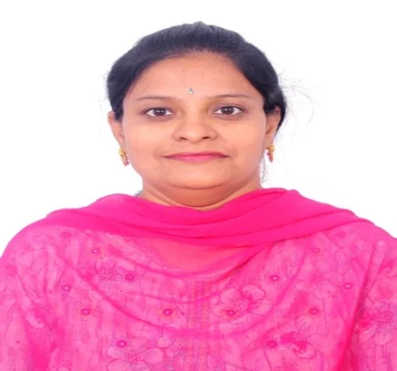

Ms. Ch. Swarna Latha is an Assistant Professor in the Department of Computer Science & Informatics at Mahatma Gandhi University, Nalgonda. She obtained her B.Tech. (CSE) and M.Tech. (CSE) degrees from Jawaharlal Nehru Technological University Hyderabad (JNTUH) and is currently pursuing her Ph.D. at Anurag University, Hyderabad. She served as the Head of the Department (HOD) from November 2021 to November 2023. She has 13 years of teaching experience at the undergraduate level. She has actively participated in faculty development programs, workshops, and conferences, and is committed to academic excellence, research, and effective student mentoring. Area of Specialization: Machine Learning, Operating Systems, Natural Language Processing, Compiler Design, Database Management Systems.